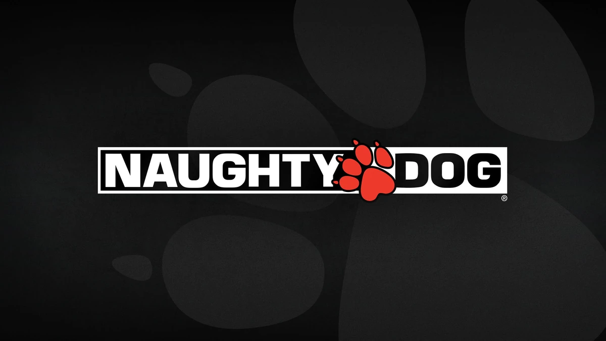

Conheça o universo de Crash
Lançado em 1996, Crash Bandicoot rapidamente se tornou um dos jogos mais marcantes da história dos videogames. Desenvolvido pela empresa Naughty Dog e publicado pela Sony Computer Entertainment, o jogo foi criado exclusivamente para o console PlayStation e ajudou a definir uma geração inteira de jogadores. O protagonista da aventura é Crash Bandicoot, um marsupial geneticamente modificado que precisa impedir os planos do cientista maluco Doctor Neo Cortex. Durante a jornada, Crash atravessa ilhas tropicais, enfrenta inimigos perigosos e supera desafios cheios de obstáculos, saltos e armadilhas. O primeiro jogo da franquia, Crash Bandicoot, chamou atenção por seus gráficos inovadores em 3D e por uma jogabilidade divertida, baseada em reflexos rápidos e exploração de fases cheias de segredos. Na época, o estilo do jogo era diferente de muitos títulos existentes, trazendo uma experiência dinâmica que conquistou milhões de jogadores.

Com o sucesso do primeiro jogo, a série continuou com títulos como Crash Bandicoot 2: Cortex Strikes Back e Crash Bandicoot: Warped, expandindo o universo do personagem e apresentando novas mecânicas, fases mais complexas e personagens memoráveis. Ao longo dos anos, Crash Bandicoot se tornou um verdadeiro símbolo da era dos videogames dos anos 90, marcando a infância de muitas pessoas e influenciando o gênero de jogos de plataforma. Décadas depois, a franquia ainda continua viva, com remasterizações e novos títulos que apresentam essa clássica aventura para novas gerações. Crash não é apenas um jogo — é uma parte da história dos videogames que continua conquistando fãs ao redor do mundo.
Os desafios que esperam por você
Uma jogabilidade rápida e divertida
Nos jogos da franquia Crash Bandicoot, cada fase apresenta um novo desafio para testar seus reflexos e habilidades. O jogador precisa correr, saltar, girar e desviar de diversos obstáculos enquanto avança por cenários cheios de perigos e surpresas.
Com o enorme sucesso do primeiro jogo, a série ganhou várias continuações que expandiram o universo de Crash Bandicoot. Títulos como Crash Bandicoot 2: Cortex Strikes Back e Crash Bandicoot: Warped trouxeram novas mecânicas, personagens e desafios ainda mais criativos.
Personagens icônicos da aventura
O universo de Crash Bandicoot é cheio de personagens marcantes que ajudam a tornar a jornada ainda mais divertida e inesquecível. O protagonista da história é Crash Bandicoot, um marsupial corajoso e cheio de energia que precisa impedir os planos malignos de seu inimigo. Mesmo sendo um herói um pouco atrapalhado, Crash sempre encontra uma forma de superar os desafios e salvar o dia.

Crash sBandicoot
Crash Bandicoot é um marsupial geneticamente modificado e o protagonista da famosa franquia de jogos de plataforma, criada em 1996 pela Naughty Dog.
Doctor Neo Cortex
Dr. Neo Periwinkle Cortex, mais conhecido como Doctor Neo Cortex, Neo Cortex, N. Cortex, Doctor Cortex ou simplesmente Cortex, é um cientista profissional do mal nascido em Peoria.
Coco Bandicoot
Coco Bandicoot é a irmã mais nova e inteligente (QI 164) de Crash Bandicoot, atuando como deuteragonista na série de jogos. Criada para ser uma heroína corajosa e técnica, ela frequentemente usa seu laptop e habilidades de hacker.
Tawna bandicoot
Tawna Bandicoot é uma personagem da franquia Crash Bandicoot, introduzida em 1996 como a namorada original de Crash e donzela em perigo. Após um longo hiato, retornou reformulada como uma heroína independente e jogável em Crash Bandicoot.Criadores de Crash Bandicoot
O estúdio criador da franquia

A franquia Crash Bandicoot nasceu na década de 1990 e foi desenvolvida pelo estúdio Naughty Dog, que na época ainda estava crescendo na indústria dos videogames. O objetivo da equipe era criar um jogo de plataforma em 3D que aproveitasse todo o potencial do console PlayStation. Os principais responsáveis pela criação do jogo foram Jason Rubin e Andy Gavin, fundadores da Naughty Dog. Eles lideraram o desenvolvimento do primeiro jogo e ajudaram a transformar Crash em um dos personagens mais reconhecidos da era dos videogames dos anos 90. O design do personagem Crash Bandicoot foi criado para ser divertido, expressivo e fácil de reconhecer. Sua personalidade maluca, suas animações exageradas e o estilo colorido do jogo ajudaram a tornar a franquia extremamente popular.